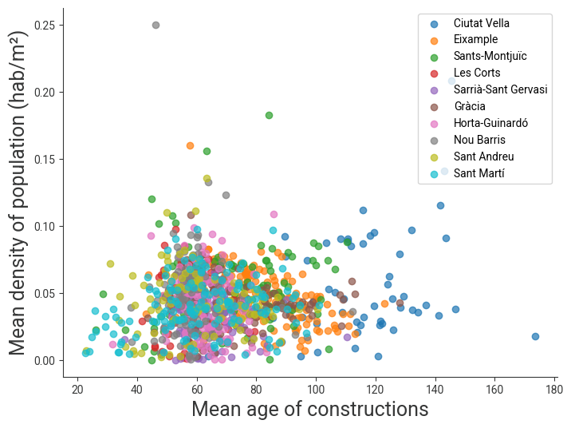
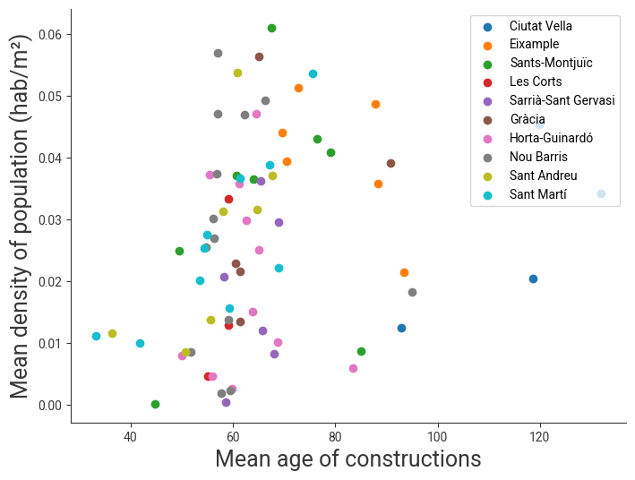
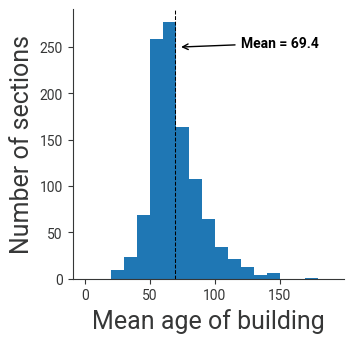

import numpy as np
import geopandas as gpd
import pandas as pd
import matplotlib.pyplot as plt
from matplotlib.patches import Patch
import mapclassify
plt.style.use('../map.mplstyle')Density of population and building ages in Barcelona
Libraries
In [1]:
Data
Data is obtained from the Open Data Portal of the Ajuntament de Barcelona, and from a curated GitHub repository containing the geographical information on the partitioning of the city in “Districtes”, “Barris”, and “Seccions Censals”.
In [2]:
# from https://opendata-ajuntament.barcelona.cat/data/ca/dataset/est-cadastre-edificacions-edat-mitjana/resource/4b0e0ac1-eade-4055-bea3-f07e2a79a7b4
edat_edificacions_fname = "../data/2026_edificacions_edat_mitjana.csv"
# from https://opendata-ajuntament.barcelona.cat/data/ca/dataset/pad_mdbas/resource/eb82adf2-a7b0-40e6-9624-b4b9eff23018
population_fname = "../data/2025_pad_mdbas.csv"
# from https://github.com/martgnz/bcn-geodata/blob/master/seccio-censal/seccio-censal.geojson
seccio_censal_geojson_fname = "../data/seccio-censal.geojson"
# from https://github.com/martgnz/bcn-geodata/blob/master/barris/barris.geojson
barris_geojson_fname = "../data/barris.geojson"
# from https://github.com/martgnz/bcn-geodata/blob/master/districtes/districtes.geojson
districtes_geojson_fname = "../data/districtes.geojson"In [3]:
# load seccio_censal geojson file
seccio_censal = gpd.read_file(seccio_censal_geojson_fname)
# fix data type of columns
seccio_censal["SEC_CENS"] = seccio_censal["SEC_CENS"].astype(int)
seccio_censal["BARRI"] = seccio_censal["BARRI"].astype(int)
seccio_censal["DISTRICTE"] = seccio_censal["DISTRICTE"].astype(int)
# select columns we need
seccio_censal = seccio_censal[['SEC_CENS', 'BARRI', 'DISTRICTE', 'AREA', 'geometry']]
seccio_censal.head()| SEC_CENS | BARRI | DISTRICTE | AREA | geometry | |
|---|---|---|---|---|---|
| 0 | 1 | 1 | 1 | 226854.317 | POLYGON ((2.17575 41.37827, 2.17577 41.37823, ... |
| 1 | 2 | 1 | 1 | 37756.212 | POLYGON ((2.1751 41.37905, 2.17543 41.37877, 2... |
| 2 | 3 | 1 | 1 | 40992.088 | POLYGON ((2.1722 41.37692, 2.17265 41.37681, 2... |
| 3 | 4 | 1 | 1 | 96760.068 | POLYGON ((2.16962 41.37847, 2.17043 41.37779, ... |
| 4 | 5 | 1 | 1 | 60542.195 | POLYGON ((2.17366 41.38071, 2.17407 41.38024, ... |
In [4]:
# load Barris geojson file
barris = gpd.read_file(barris_geojson_fname)
barris["BARRI"] = barris["BARRI"].astype(int)
barris["DISTRICTE"] = barris["DISTRICTE"].astype(int)
barris = barris[['BARRI', 'DISTRICTE', 'NOM', 'geometry']].rename(columns={'NOM':'NOM_BARRI'})
barris.head()| BARRI | DISTRICTE | NOM_BARRI | geometry | |
|---|---|---|---|---|
| 0 | 1 | 1 | el Raval | POLYGON ((2.16471 41.38593, 2.16936 41.38554, ... |
| 1 | 2 | 1 | el Barri Gòtic | POLYGON ((2.17701 41.38525, 2.17873 41.38396, ... |
| 2 | 3 | 1 | la Barceloneta | POLYGON ((2.19623 41.38745, 2.19631 41.38745, ... |
| 3 | 7 | 2 | la Dreta de l'Eixample | POLYGON ((2.17091 41.40182, 2.17221 41.40083, ... |
| 4 | 8 | 2 | l'Antiga Esquerra de l'Eixample | POLYGON ((2.15736 41.39331, 2.15847 41.39245, ... |
In [5]:
# load Districtes geojson file
districtes = gpd.read_file(districtes_geojson_fname)
districtes['DISTRICTE'] = districtes['DISTRICTE'].astype(int)
districtes = districtes[['DISTRICTE', 'NOM', 'geometry']].rename(columns={'NOM':'NOM_DISTRICTE'})
districtes.head()| DISTRICTE | NOM_DISTRICTE | geometry | |
|---|---|---|---|
| 0 | 1 | Ciutat Vella | POLYGON ((2.18345 41.39061, 2.18459 41.38976, ... |
| 1 | 2 | Eixample | POLYGON ((2.1869 41.40165, 2.18689 41.40087, 2... |
| 2 | 3 | Sants-Montjuïc | MULTIPOLYGON (((2.14824 41.37623, 2.14896 41.3... |
| 3 | 4 | Les Corts | POLYGON ((2.10342 41.4011, 2.10352 41.40109, 2... |
| 4 | 5 | Sarrià-Sant Gervasi | MULTIPOLYGON (((2.07313 41.43522, 2.07319 41.4... |
In [6]:
# load data on the mean age of the construction, keeping only the code of the seccio_censal
# and the data point relative to the mean construction age
edat = pd.read_csv(edat_edificacions_fname)
edat = edat.rename(
columns={'Seccio_censal':'SEC_CENS', 'Codi_barri':'BARRI', 'Codi_districte':'DISTRICTE'})\
[['SEC_CENS', 'BARRI', 'DISTRICTE','Edat_mitjana']]
edat.head()| SEC_CENS | BARRI | DISTRICTE | Edat_mitjana | |
|---|---|---|---|---|
| 0 | 1 | 1 | 1 | 100.4 |
| 1 | 2 | 1 | 1 | 108.7 |
| 2 | 3 | 1 | 1 | 110.8 |
| 3 | 4 | 1 | 1 | 95.4 |
| 4 | 5 | 1 | 1 | 119.6 |
In [7]:
# load data on the number of people living in each "Secció Censal"
population = pd.read_csv(population_fname)
population['SEC_CENS'] = population['Seccio_Censal'].apply(lambda x:int(str(x)[-3:]))
population = population.rename(columns={'Codi_Districte':'DISTRICTE', 'Valor':'population'})\
[['DISTRICTE', 'SEC_CENS', 'population']]
population.head()| DISTRICTE | SEC_CENS | population | |
|---|---|---|---|
| 0 | 1 | 1 | 1419 |
| 1 | 1 | 2 | 1345 |
| 2 | 1 | 3 | 3710 |
| 3 | 1 | 4 | 3092 |
| 4 | 1 | 5 | 2443 |
In [8]:
# this is the GeoDataFrame that will be used for plotting the maps
gdf = seccio_censal.merge(edat, how='left').merge(population, how='left')
gdf['density'] = gdf['population']/gdf['AREA']
gdf.info()<class 'geopandas.geodataframe.GeoDataFrame'>
RangeIndex: 1068 entries, 0 to 1067
Data columns (total 8 columns):
# Column Non-Null Count Dtype
--- ------ -------------- -----
0 SEC_CENS 1068 non-null int64
1 BARRI 1068 non-null int64
2 DISTRICTE 1068 non-null int64
3 AREA 1068 non-null float64
4 geometry 1068 non-null geometry
5 Edat_mitjana 1055 non-null float64
6 population 1068 non-null int64
7 density 1068 non-null float64
dtypes: float64(3), geometry(1), int64(4)
memory usage: 66.9 KBPlots
Bivariate map
In [9]:
gdf['x_group'] = gdf[['Edat_mitjana']].apply(mapclassify.Quantiles.make(rolling=True, k = 3))
gdf['y_group'] = gdf[['density']].apply(mapclassify.Quantiles.make(rolling=True, k = 3))
gdf['xy_group'] = gdf['x_group'].astype(str) + "-" + gdf['y_group'].astype(str)
gdf.head()| SEC_CENS | BARRI | DISTRICTE | AREA | geometry | Edat_mitjana | population | density | x_group | y_group | xy_group | |
|---|---|---|---|---|---|---|---|---|---|---|---|
| 0 | 1 | 1 | 1 | 226854.317 | POLYGON ((2.17575 41.37827, 2.17577 41.37823, ... | 100.4 | 1419 | 0.006255 | 2 | 0 | 2-0 |
| 1 | 2 | 1 | 1 | 37756.212 | POLYGON ((2.1751 41.37905, 2.17543 41.37877, 2... | 108.7 | 1345 | 0.035623 | 2 | 1 | 2-1 |
| 2 | 3 | 1 | 1 | 40992.088 | POLYGON ((2.1722 41.37692, 2.17265 41.37681, 2... | 110.8 | 3710 | 0.090505 | 2 | 2 | 2-2 |
| 3 | 4 | 1 | 1 | 96760.068 | POLYGON ((2.16962 41.37847, 2.17043 41.37779, ... | 95.4 | 3092 | 0.031955 | 2 | 0 | 2-0 |
| 4 | 5 | 1 | 1 | 60542.195 | POLYGON ((2.17366 41.38071, 2.17407 41.38024, ... | 119.6 | 2443 | 0.040352 | 2 | 1 | 2-1 |
In [25]:
color_mapping = {
"0-0": "#f0f0f0",
"1-0": "#b3cde3",
"2-0": "#6497b1",
"0-1": "#fdbb84",
"1-1": "#9e9e9e",
"2-1": "#4f81a3",
"0-2": "#e34a33",
"1-2": "#b3588a",
"2-2": "#2c3e75"
}In [31]:
# calculate the max and min of the age of the buildings
import contextily as ctx
# gdf = gdf.to_crs(epsg=3857)
# districtes = districtes.to_crs(epsg=3857)
scale = 0.7
fig, ax = plt.subplots(figsize=(scale*10, scale*12))
gdf.plot(
categorical = True,
edgecolor = "xkcd:light grey",
linewidth = 0.2,
linestyle='--',
ax = ax,
color=gdf["xy_group"].map(color_mapping),
).set_axis_off();
districtes.plot(
ax=ax,
facecolor='none',
edgecolor='k',
linewidth=0.15)
# ctx.add_basemap(
# ax,
# source=ctx.providers.CartoDB.Positron,
# alpha=0.5 # key: keep it subtle
# )
# --- Create inset axis for legend ---
legend_ax = fig.add_axes([0.18, 0.18, 0.1, 0.1]) # [left, bottom, width, height]
legend_ax.set_aspect('equal')
# --- Build 3x3 color grid ---
legend_grid = np.array([
["0-0", "1-0", "2-0"],
["0-1", "1-1", "2-1"],
["0-2", "1-2", "2-2"]
])
color_grid = [[color_mapping[cell] for cell in row] for row in legend_grid]
# --- Plot as image ---
for i in range(3):
for j in range(3):
legend_ax.add_patch(plt.Rectangle(
(j, i), 1, 1,
facecolor=color_grid[i][j],
edgecolor='gray'
))
legend_ax.set_xlim(0, 3)
legend_ax.set_ylim(0, 3)
# Remove ticks
legend_ax.set_xticks([])
legend_ax.set_yticks([])
# --- Axis labels ---
legend_ax.set_xlabel("Older Buidlings", fontsize=9)
legend_ax.set_ylabel("Denser Areas", fontsize=9)
legend_ax.set_xticks([0.5, 1.5, 2.5])
legend_ax.set_xticklabels(["Low", "Med", "High"], fontsize=8)
legend_ax.tick_params('both', length=0)
legend_ax.set_yticks([0.5, 1.5, 2.5])
legend_ax.set_yticklabels(["Low", "Med", "High"], fontsize=8)
# Clean frame
for spine in legend_ax.spines.values():
spine.set_visible(False)
ax.text(
2.05, 41.48, "Where Barcelona is Older and Denser",
fontsize=16, weight='bold'
)
ax.text(
2.05, 41.474, "Mean Age of Buildings and Density of Population",
fontsize=14
)
ax.text(
0.71, 0.01,
"Source: Barcelona Open Data",
transform=ax.transAxes,
fontsize=8,
color="gray"
)
fig.savefig('map.png', bbox_inches='tight', dpi=600)
ax.axis('off')
plt.show()
In [11]:
plot_df = population_gdf.merge(df).merge(districtes[['DISTRICTE', 'NOM_DISTRICTE']], on='DISTRICTE')
fig, ax = plt.subplots(figsize=(8,6))
for districte in plot_df['DISTRICTE'].unique():
tmp = plot_df[plot_df['DISTRICTE']==districte]
nom_districte = districtes.set_index('DISTRICTE')['NOM_DISTRICTE'][districte]
ax.scatter(tmp['Edat_mitjana'], tmp['density'], label=nom_districte, alpha=0.7)
ax.legend(loc='upper right', frameon=True)
ax.set_xlabel("Mean age of constructions")
ax.set_ylabel("Mean density of population (hab/m²)")Text(0, 0.5, 'Mean density of population (hab/m²)')
In [12]:
plot_df = population_gdf.merge(df).merge(districtes[['DISTRICTE', 'NOM_DISTRICTE']], on='DISTRICTE')
fig, ax = plt.subplots(figsize=(8,6))
ax.scatter(plot_df['Edat_mitjana'], plot_df['density'], alpha=0.7)
ax.set_xlabel("Mean age of constructions")
ax.set_ylabel("Mean density of population (hab/m²)")Text(0, 0.5, 'Mean density of population (hab/m²)')
In [13]:
barris_df = pd.DataFrame({
'area':seccio_censal.groupby('BARRI').AREA.sum(),
'Edat_mitjana':df.groupby('BARRI').Edat_mitjana.mean(),
'population':population.merge(seccio_censal).groupby('BARRI')['population'].sum()
}).reset_index()
barris_df['density'] = barris_df['population']/barris_df['area']
barris_df = barris_df.merge(barris[['BARRI', 'DISTRICTE', 'NOM_BARRI']])\
.merge(districtes[['DISTRICTE', 'NOM_DISTRICTE']])
barris_df| BARRI | area | Edat_mitjana | population | density | DISTRICTE | NOM_BARRI | NOM_DISTRICTE | |
|---|---|---|---|---|---|---|---|---|
| 0 | 1 | 1100286.139 | 119.895238 | 49917 | 0.045367 | 1 | el Raval | Ciutat Vella |
| 1 | 2 | 815593.939 | 131.933333 | 27878 | 0.034181 | 1 | el Barri Gòtic | Ciutat Vella |
| 2 | 3 | 1179381.956 | 92.836364 | 14749 | 0.012506 | 1 | la Barceloneta | Ciutat Vella |
| 3 | 4 | 1109668.776 | 118.576923 | 22767 | 0.020517 | 1 | Sant Pere, Santa Caterina i la Ribera | Ciutat Vella |
| 4 | 5 | 929355.787 | 70.425000 | 36621 | 0.039405 | 2 | el Fort Pienc | Eixample |
| ... | ... | ... | ... | ... | ... | ... | ... | ... |
| 68 | 69 | 1226952.564 | 33.271429 | 13691 | 0.011159 | 10 | Diagonal Mar i el Front Marítim del Poblenou | Sant Martí |
| 69 | 70 | 1208701.464 | 54.375000 | 30724 | 0.025419 | 10 | el Besòs i el Maresme | Sant Martí |
| 70 | 71 | 1085739.627 | 53.480000 | 21902 | 0.020172 | 10 | Provençals del Poblenou | Sant Martí |
| 71 | 72 | 733989.017 | 61.487500 | 26976 | 0.036753 | 10 | Sant Martí de Provençals | Sant Martí |
| 72 | 73 | 1129978.396 | 54.875000 | 31173 | 0.027587 | 10 | la Verneda i la Pau | Sant Martí |
73 rows × 8 columns
In [14]:
fig, ax = plt.subplots(figsize=(8,6))
for districte in barris_df['DISTRICTE'].unique():
tmp = barris_df[barris_df['DISTRICTE']==districte]
nom_districte = districtes.set_index('DISTRICTE')['NOM_DISTRICTE'][districte]
ax.scatter(tmp['Edat_mitjana'], tmp['density'], label=nom_districte)
ax.legend(loc='upper right', frameon=True)
ax.set_xlabel("Mean age of constructions")
ax.set_ylabel("Mean density of population (hab/m²)")Text(0, 0.5, 'Mean density of population (hab/m²)')
In [15]:
fig, ax = plt.subplots(figsize=(3.5,3.5))
plot_df.Edat_mitjana.hist(grid=False, bins=np.arange(20)*10)
ax.set_xlabel("Mean age of building")
ax.set_ylabel("Number of sections")
m = plot_df.Edat_mitjana.mean()
ax.axvline(x=m, color='k', linestyle='--', linewidth=0.75)
y = 250
ax.annotate(
f"Mean = {m:.1f}",
xy=(72, y),
xytext=(120, y),
arrowprops=dict(arrowstyle="->", color="black"),
fontsize=10,
weight='bold'
)Text(120, 250, 'Mean = 69.4')
In [16]:
def barrio_plot(barrio):
fig, ax = plt.subplots()
barrio.plot(ax=ax, column='Edat_mitjana', cmap='YlOrRd')
ax.axis(False)
ax.set_title(barrio['NOM_BARRI'].unique()[0])
# color bar
cax = fig.add_axes([0.18, 0.82, 0.12, 0.01])
m, M = df.Edat_mitjana.min(), df.Edat_mitjana.max()
sm = plt.cm.ScalarMappable(cmap='YlOrRd', norm=plt.Normalize(vmin=m, vmax=M))
sm._A = []
cbar = plt.colorbar(sm, cax=cax, drawedges=False, orientation="horizontal")
cbar.outline.set_edgecolor('darkgray')
cbar.set_label("Mean age of constructions", fontsize=10)
gdf = seccio_censal.merge(df).merge(barris[['BARRI', 'NOM_BARRI']])
barrio_id = 20
barrio = gpd.GeoDataFrame(gdf[gdf.BARRI == barrio_id])
barrio_plot(barrio)
# for barrio_id in gdf['BARRI'].unique():
# barrio = gpd.GeoDataFrame(gdf[gdf.BARRI == barrio_id])
# barrio_plot(barrio)
In [6]:
| BARRI | NOM_BARRI | DISTRICTE | geometry | |
|---|---|---|---|---|
| 0 | 1 | el Raval | 1 | POLYGON ((2.16471 41.38593, 2.16936 41.38554, ... |
| 1 | 2 | el Barri Gòtic | 1 | POLYGON ((2.17701 41.38525, 2.17873 41.38396, ... |
| 2 | 3 | la Barceloneta | 1 | POLYGON ((2.19623 41.38745, 2.19631 41.38745, ... |
| 3 | 7 | la Dreta de l'Eixample | 2 | POLYGON ((2.17091 41.40182, 2.17221 41.40083, ... |
| 4 | 8 | l'Antiga Esquerra de l'Eixample | 2 | POLYGON ((2.15736 41.39331, 2.15847 41.39245, ... |
| ... | ... | ... | ... | ... |
| 68 | 50 | les Roquetes | 8 | POLYGON ((2.18315 41.45279, 2.18312 41.45271, ... |
| 69 | 53 | la Trinitat Nova | 8 | POLYGON ((2.18872 41.45504, 2.18878 41.45484, ... |
| 70 | 54 | Torre Baró | 8 | POLYGON ((2.18137 41.46144, 2.18173 41.46103, ... |
| 71 | 55 | Ciutat Meridiana | 8 | POLYGON ((2.17959 41.46406, 2.17998 41.46357, ... |
| 72 | 56 | Vallbona | 8 | POLYGON ((2.18407 41.4683, 2.18417 41.46828, 2... |
73 rows × 4 columns
In [26]:
gdf.merge(barris, on=["BARRI", "DISTRICTE"])| id | SEC_CENS | BARRI | DISTRICTE | AREA | geometry_x | Edat_mitjana | NOM_BARRI | geometry_y | |
|---|---|---|---|---|---|---|---|---|---|
| 0 | 0 | 1 | 1 | 1 | 226854.317 | POLYGON ((2.17575 41.37827, 2.17577 41.37823, ... | 100.4 | el Raval | POLYGON ((2.16471 41.38593, 2.16936 41.38554, ... |
| 1 | 1 | 2 | 1 | 1 | 37756.212 | POLYGON ((2.1751 41.37905, 2.17543 41.37877, 2... | 108.7 | el Raval | POLYGON ((2.16471 41.38593, 2.16936 41.38554, ... |
| 2 | 2 | 3 | 1 | 1 | 40992.088 | POLYGON ((2.1722 41.37692, 2.17265 41.37681, 2... | 110.8 | el Raval | POLYGON ((2.16471 41.38593, 2.16936 41.38554, ... |
| 3 | 3 | 4 | 1 | 1 | 96760.068 | POLYGON ((2.16962 41.37847, 2.17043 41.37779, ... | 95.4 | el Raval | POLYGON ((2.16471 41.38593, 2.16936 41.38554, ... |
| 4 | 4 | 5 | 1 | 1 | 60542.195 | POLYGON ((2.17366 41.38071, 2.17407 41.38024, ... | 119.6 | el Raval | POLYGON ((2.16471 41.38593, 2.16936 41.38554, ... |
| ... | ... | ... | ... | ... | ... | ... | ... | ... | ... |
| 1050 | 1050 | 16 | 19 | 4 | 26533.586 | POLYGON ((2.14156 41.38653, 2.14264 41.38562, ... | 55.9 | les Corts | POLYGON ((2.13747 41.39144, 2.13877 41.39124, ... |
| 1051 | 1051 | 90 | 27 | 5 | 52964.068 | POLYGON ((2.14645 41.40951, 2.14719 41.40859, ... | 68.9 | el Putxet i el Farró | POLYGON ((2.14838 41.40699, 2.14848 41.4069, 2... |
| 1052 | 1052 | 91 | 27 | 5 | 40719.053 | POLYGON ((2.14315 41.41149, 2.14447 41.41138, ... | 66.5 | el Putxet i el Farró | POLYGON ((2.14838 41.40699, 2.14848 41.4069, 2... |
| 1053 | 1053 | 92 | 27 | 5 | 162177.819 | POLYGON ((2.14264 41.41083, 2.1427 41.41082, 2... | 63.2 | el Putxet i el Farró | POLYGON ((2.14838 41.40699, 2.14848 41.4069, 2... |
| 1054 | 1054 | 93 | 27 | 5 | 28166.117 | POLYGON ((2.13981 41.40682, 2.14038 41.40684, ... | 58.0 | el Putxet i el Farró | POLYGON ((2.14838 41.40699, 2.14848 41.4069, 2... |
1055 rows × 9 columns
In [20]:
import json
gdf = seccio_censal.merge(df)
gdf = gdf.reset_index().rename(columns={"index": "id"})
geojson = json.loads(gdf.to_json())In [22]:
import plotly.express as px
fig = px.choropleth(
gdf,
geojson=geojson,
locations=gdf.index,
featureidkey="properties.id",
color="Edat_mitjana",
color_continuous_scale="YlOrRd",
)
fig.update_geos(
fitbounds="locations",
visible=False
)
fig.update_traces(
marker_line_width=0.2,
marker_line_color="rgba(80,80,80,0.5)"
)
figUnable to display output for mime type(s): application/vnd.plotly.v1+jsonIn [30]:
df.groupby('BARRI').Edat_mitjana.max()BARRI
1 146.9
2 173.5
3 110.6
4 134.1
5 86.9
...
69 49.3
70 78.0
71 70.4
72 101.1
73 86.9
Name: Edat_mitjana, Length: 73, dtype: float64